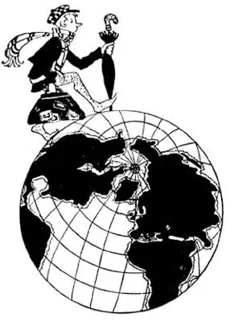
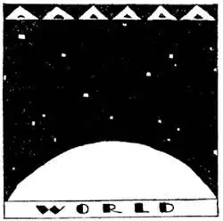
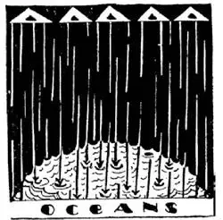
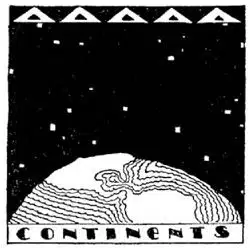
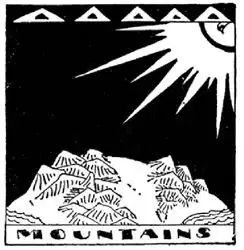

02
The World Is Round, for I’ve Been Round It
世界是圆的，我围着它绕了一圈

DID you ever run away from home?
I did—once upon a time—when I was younger than you are.
I wanted to see the World.
My Mother had told me the World was a huge ball and that if I kept on, straight ahead, following my nose, I would go round the ball and come back to where I started.
So early one morning, without telling any one, I set out to go around the World.
But I didn’t get very far before night came on, and a big kind policeman brought me back home.
When I was grown up and had no home, I started out once again to go around the World. This time I got on a train headed toward the setting sun. Night came on, but no big, kind policeman brought me back home; so I kept on and on, day after day, week after week, month after month—sometimes on trains, sometimes on boats, sometimes in automobiles, sometimes on the backs of animals—but always toward the side of the World where the sun sets, the side which the people call “the west.”

I passed broad fields and thick forests, small towns and big cities—I went over bridges, round hills, and through holes in mountains—I reached a great ocean and sailed across it on a big ship to another continent—I came to strange lands where people dressed in strange clothes, lived in strange houses, and spoke strange languages; I saw strange animals, trees, and flowers; I crossed another great ocean and at last, after many, many months, always going in the same direction, I came back here to the exact spot from which I had started. So I knew the World was round, for I had been round it—but it was not round and smooth like a tennis ball, but humpty and bumpety, and so huge that it didn’t seem like a ball at all.
It took me nearly half a year to go round the World—that seems like a long time, but then it was a long way—over twenty-five times a thousand miles. But others have been around the World in much faster time. The airship Graf Zeppelin flew around the World in three weeks. Two flyers took less than nine days to circle the globe in their airplane and return to their starting point, New York. An American Air Force plane flew around the World without stopping in less than four days.
If a man could start out when the sun rose in the morning and keep up with it all day long, go over the side of the World when the sun set, and keep up with it on the other side of the World, he would be back again where he started the next morning. He then would have gone round the World in one day. But to do that he would have to travel over 1,000 miles an hour to keep up with the sun for each of the twenty-four hours in a day and night.
All around the outside of the World—as you probably know—is an ocean of air that covers everything on the World as the ocean of water covers everything in the sea. What you probably don’t know is that this ocean of air is wrapped only round the World—it does not fill the sky. Men and animals live in this ocean of air as fish live in the ocean of water, and if a huge giant picked you out of the air you would die just as quickly as a fish does when taken out of the sea. The air is thick near the ground but gets thin and thinner the higher up you go off the ground. That’s why airplanes can go up but a few miles high—there is not enough air to hold up the plane, for the plane must have air to rest on and for its propeller to push against, just as a boat in the water must have water to rest on and water for its propeller to push against. Or if it’s a jet plane, it must have air to feed its jet motors. An airplane could not rise beyond the ocean of air and sail off into the sky where there is no air any more than a steamship on the sea could rise out of the water and sail off up into the air.

The World was once a ball of fire
世界曾经是个大火球

Then it rained on the World and the oceans formed
世界上开始下雨，海洋形成

Then the World wrinkled and crinkled like the outside of a prune
世界收缩、起皱，变成像梅子干的外皮一样

And the continents and mountains arose out of the ocean
陆地和高山从海洋下升起
There is only one thing that men can send up high enough to travel above the ocean of air. That is a rocket, which doesn’t depend on air for its motor or to hold it up. Someday rocket ships will probably carry men on trips to the Moon or even to the planet Mars. How would you like to go exploring in a rocket ship beyond the World’s atmosphere out through empty, airless space? How would you like to be the first Man in the Moon? You wouldn’t find any living thing on the Moon, for the Moon is a dead, lifeless ball without any air on it at all. But if your rocket got to Mars you would almost certainly find some living plants—and perhaps, who knows?—even some living animals.
Some mountains are so high that their tops almost stick out of the ocean of air; at least, there is so little air covering their tops that people can’t go all the way to the top unless they take along canned air to breathe.
You can’t see air—you may think you can, but what you see is smoke or clouds, not air. When air is moving, we call it wind. Then you can feel it when it blows your hat off, you can hear it when it bangs the shutters and whistles round the house; but no one has ever seen air itself.
The World wasn’t always as it is now. It was once a ball of fire—a huge burning ball. That was millions of years ago, and of course long before there were any people or animals or plants on the World. But the fiery ball got cooler and cooler until it was no longer burning but a hot ball of rock. There were then no oceans, no water on the World, for water won’t stay on anything very hot—it won’t stay on a hot stove—it turns to steam when there is fire under it; so there were only clouds of steam, an ocean of steam, around the World. But the World kept getting cooler and cooler until at last the steam turned to water and fell on the World—rain, rain, rain, until there perhaps was one big ocean covering the whole World.
But the World still kept on cooling and cooling, and as it cooled it shrank and shriveled and wrinkled and crinkled and puckered like the outside of a prune. You know a prune was once smooth and round when it was a plum. These little wrinkles and crinkles rose up out of the ocean and were the continents and mountains, so you see how big the wrinkles and crinkles really are. The earth is still wrinkling a bit even now, and when it does so it shivers and shakes and we say there has been an earthquake. But the earthquakes nowadays are as nothing to what may have been the tremendous shudder when the continents rose out of the first single ocean. The thunderous roar of that quake may have reached the stars with a stupendous and appalling boom of a bursting, cracking, rending, groaning World, as if the last day had come. Don’t you know what stupendous and appalling boom means? Why, it means “stupendous and appalling boom.” But that’s all guess—for the continents may have risen out of the sea as softly, slowly, silently as a blade of grass grows out of the ground. No one knows. We only know the continents did rise out of the water—we can find seashells on the tops of high mountains, and we know they could only have been made under the water when the mountain was under the water.
【中文阅读】
你曾离家出走过吗？
我有过，有一次在我比你还小的时候。
我想要去看这个世界。
妈妈告诉我世界是个大球，只要我一直向前走，跟着我鼻子所指的方向，我会环绕这个大球一圈，回到我出发的地方。
于是一天清早我没有告诉任何人就开始出发去环绕世界了。
但是我还没走多远天就黑了，一个个子高高的好心的警察把我送回了家。
当我长大后，还没成家的时候，我开始再次出发去环游世界。这次我坐上了一列开往太阳落山方向的火车。夜晚降临了，但是没有个子高高的好心的警察带我回家；于是我一直向前行，一天又一天，一周又一周，一月又一月，有时在火车上，有时在船上，有时在汽车上，有时骑着牲畜，但始终朝向太阳下山的方向，也就是人们称为“西方”的那一边。
我跨过了辽阔的田地，穿过茂密的森林，走过小乡镇和大城市——我跨过桥，绕过山，钻过山洞——我到达一片海洋，坐上一艘大轮船横越海洋抵达另一个大陆；我到了一些奇怪的地方，人们穿着奇怪的衣服，住在奇怪的房子里，说着奇怪的语言；我见到了奇怪的动物、树木和花草；我跨越了另一个海洋，最终在朝着同一方向旅行了好多好多月之后，我准确地回到了我开始出发的那个地点。所以我知道世界是圆的，因为我已经围着它绕了一圈。但世界并不是像网球那样又圆又光滑，而是像个蛋形矮胖子，而且它太大了，看起来根本不像个球。
我花了将近半年的时间环绕世界一周——看起来是很长的一段时间，但更 是很长的一段路程——超过25个1000英里那么长。但是有人以更快的时间环绕过世界。“齐柏林飞艇”只要三个星期时间就能围绕世界飞一圈。两名飞行员用了不到九天的时间驾驶飞机环绕地球一周，最终回到他们的出发点——纽约。一架美国空军飞机连续不停地飞了不到四天环绕世界一周。
如果一个人能在早晨太阳升起的时候出发，一整天都跟着太阳走，太阳下山的时候走完世界的一面，并且一直跟着太阳走过世界的另一面，那么他就会在第二天早晨回到他出发的地方。那他就是在一天之内环游了全世界。但是要跟得上太阳的脚步，他必须得昼夜24小时时刻保持每小时1000英里以上的速度才行。
也许你知道，世界的外围包裹着一层空气，这个空气就像海洋一样覆盖着世界上所有的东西，就像大海里的水覆盖着海里的所有东西一样。但你可能不知道这个空气的海洋仅仅是包裹着我们的世界，天空中并没有。人和动物居住在这个空气的海洋中，就像鱼住在海里一样。如果一个大巨人把你抱出了这个空气海洋，你很快就会死掉，就像鱼从水里捞出来就会死一样。靠近地面的地方空气比较浓厚，但是离开地面越高空气就越来越稀薄。这就是为什么飞机只能飞到几英里高的地方——更高的地方没有足够的空气来支撑飞机，因为飞机必须依靠空气，让它的推进器推动空气使它飞行，就像船必须停在水面上，它的推进器才可以推开水使它前行。如果是喷气式飞机的话，必须得有空气来填充它的喷气式发动机。飞机不能脱离空气的海洋飞到没有空气的高空中，就像海上的轮船不能离开水行驶到空中一样。
人只能把一样东西发射到没有空气的高空中运行，那就是火箭，它不需要空气推动它的发动机，也不需要空气撑托它。也许有一天宇宙飞船可以载人飞行到月球上或是火星上 [1] 。你想乘一艘宇宙飞船飞出地球的大气层，到那空无一人、没有空气的太空中去探险吗？你想成为踏上月球的第一人吗？你会发现月球上没有任何生物，因为月球是一个没有空气、没有生命的死星球。但是如果宇宙飞船把你带到火星上去，也许你能发现一些活的植物，甚至会有活的动物，谁知道呢？
有些山非常高，高到山顶几乎都伸出了大气层；至少，山顶上空气非常稀薄，所以人们不带氧气罐就无法一直登到山顶。
你看不到空气——也许你觉得自己能看到，但你看到的只是烟或云，而不是空气。空气流动的时候，我们称之为风。当风把你的帽子吹走的时候你可以感觉到它，当它撞着百叶窗，在房子外呼啸的时候你可以听到它。但是没有人 看到过空气本身。
世界并不总是现在这个样子的。它曾经是一个火球——一个巨大的燃烧的球。早在世界上人、动物或植物存在以前，它已经存在几百万年了。但是这个大火球逐渐冷却，直到不再燃烧，成为一个灼热的大石球。当时世界上没有海洋，没有水，因为水不能在任何热的东西上面停留，比如说一个热热的火炉，当下面有火的时候，水就会变成水蒸气。所以当时的世界上只有大团大团的水蒸气，一个蒸汽的海洋笼罩着世界。但是世界还在持续冷却，直到最后水蒸气变成了水落到地球上——那就是雨，雨不停地下，直到形成了一个巨大的海洋覆盖在世界上。
但是世界还在继续变凉，它在变凉的同时开始收缩、枯萎、起皱、卷缩、皱缩，最后变成像梅子干的外皮那样。你知道梅子干或梅子是光滑滑圆溜溜的。地球上的这些小皱褶从海洋上升起变成了大陆和高山，这下你就明白这些皱褶有多么的大了。我们的地球甚至现在还在一点点地皱缩，当它皱缩的时候，会摇晃、震动，我们就说是发生地震了。但是和陆地在巨大的抖动中从最初的一整片海洋中升起的时候相比，现在的地震根本不算什么。当时的地震肯定发出了轰隆隆的呼啸声，世界发出了大得惊人的、可怕的爆裂声、割裂声和呻吟声，这声音大得都能传到星星上去了，好像世界末日来临一样。你不知道什么是大得惊人的、可怕的轰隆声吗？嗯，那就是可怕的、大得惊人的轰隆声。但这都是我们的猜测，因为也许陆地是非常轻柔地、缓慢地、悄悄地升出了海面呢，就像一片小草叶悄悄地钻出了地面一样。没有人知道。我们唯一确定的就是陆地确实是从水下升上来的，因为我们能在高山顶上找到贝壳，而我们知道那只能是高山还在水下的时候形成的。